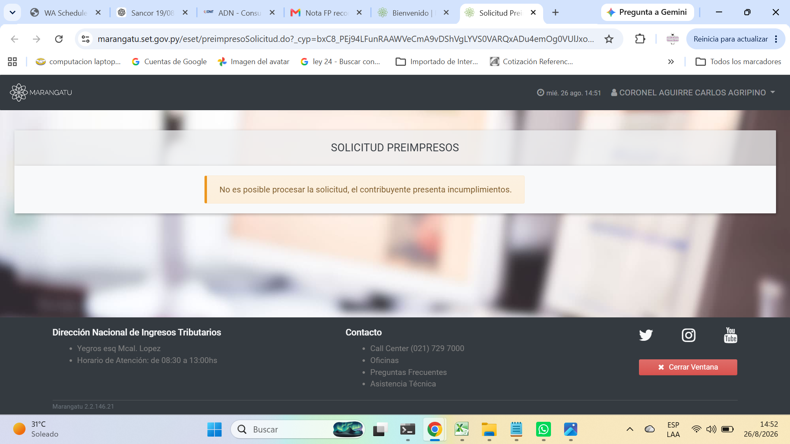
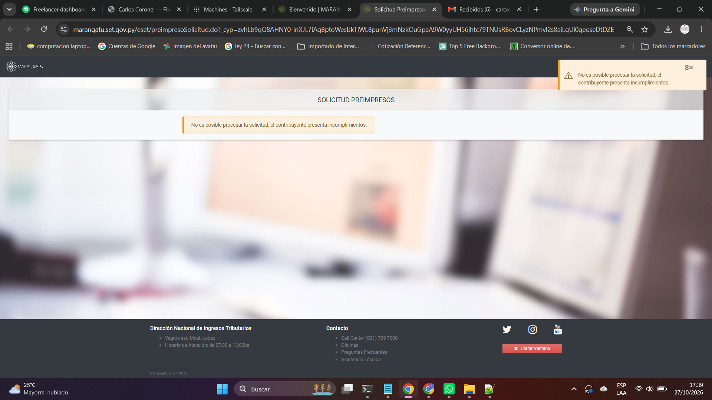
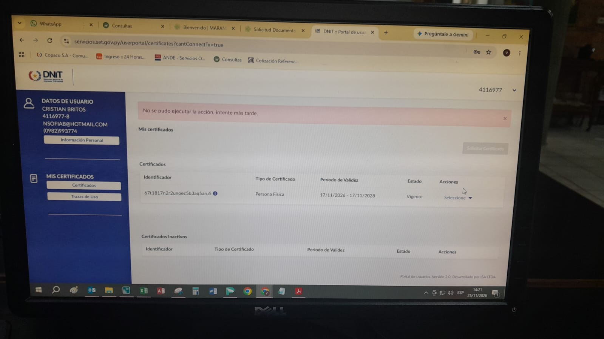
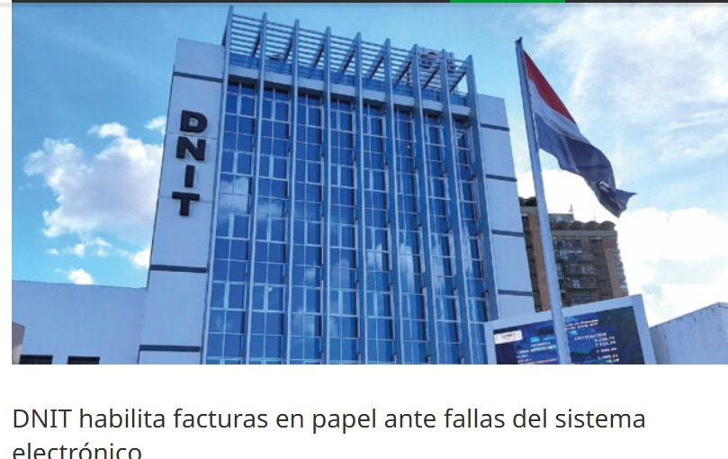

Esta página es un recurso ciudadano de acceso libre, creado para documentar públicamente las fallas del sistema tributario digital de la DNIT (Dirección Nacional de Ingresos Tributarios) de Paraguay, que afectan a contribuyentes formales que cumplen o intentan cumplir con sus obligaciones fiscales.
Toda la información publicada aquí fue presentada previamente ante instituciones del Estado (DNIT, Contraloría, Defensoría del Pueblo, Ministerio Público) como parte de recursos administrativos y acciones legales en curso. No se incluyen datos personales de terceros sin consentimiento expreso, en cumplimiento de la Ley 1682/2001 de Protección de Datos Personales de la República del Paraguay.
Si vos también estás en una situación similar, encontrarás al final de esta página una guía de pasos y un canal para reportar tu caso.
a pesar de FP activa
Error nov/2026 (caso Ueno Bank)
Nuevas altas bloqueadas
Defensoría Pública solicitada
Empresa unipersonal de desarrollo de software para pequeñas y medianas empresas. Regularizó su situación fiscal mediante Facilidad de Pago activa (FP N°3210861391) aprobada por la propia DNIT. A pesar del cumplimiento activo, el sistema Marangatú bloquea la dosificación de timbrado desde el 26 de agosto de 2026.

Marangatú bloquea solicitud de preimpresos

Bloqueo persiste — sin resolución

Bloqueo continúa activo

Contribuyente cumplió el acuerdo
Taller de electrónica automotriz que contrató e instaló un sistema de Factura Electrónica SIFEN homologado. El contribuyente completó íntegramente todos los pasos requeridos por la DNIT para activar la FE.
El contribuyente quiso cumplir. Hizo todo lo que se le exigió. El único obstáculo es la infraestructura del Estado. Esta situación fue reconocida por la propia DNIT cuando Hugo López (coordinador SIFEN) autorizó el retorno temporal a la factura en papel el 25/11/2026.

Certificado "Vigente" — Error al intentar descargar el .pfx
"Los contribuyentes que no logren emitir comprobantes electrónicos por inconvenientes en sus sistemas podrán recurrir temporalmente a la facturación en papel. La DNIT habilitó esta salida mientras se realizan las reparaciones."
"Los afectados pueden gestionar ante la institución un timbrado para utilizar facturas preimpresas o autoimpresas. Esta autorización les permitirá continuar documentando sus operaciones hasta que recuperen el funcionamiento normal de sus plataformas."


¿Tu caso es similar? Reportalo.
Si la DNIT te bloqueó injustamente y querés que tu caso sea documentado en esta página (con o sin identificación), escribinos. Cuantos más casos documentados existan, más difícil le resulta a la DNIT ignorar el problema y más fuerte se vuelve el argumento sistémico ante cualquier instancia judicial o pública.